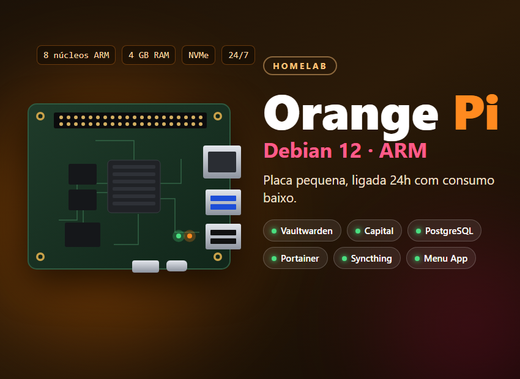
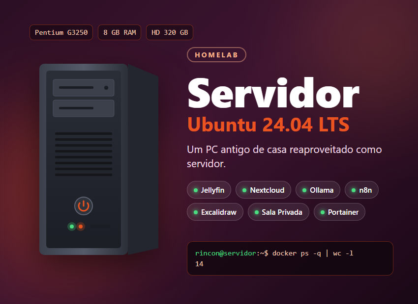

Meus servidores em casa
Duas máquinas aqui de casa rodam os serviços que eu uso no dia a dia e alguns dos meus projetos. Tudo roda em containers Docker e chega na internet pelo Cloudflare Tunnel, sem abrir nenhuma porta no roteador.

Orange Pi
É a máquina que fica ligada o tempo todo. Gasta pouca energia, então cuida do que não pode parar: o cofre de senhas, o Capital com o banco de dados dele e o Menu App, que acompanha as duas máquinas.
- Sistema
- Debian 12 (bookworm)
- Processador
- 8 núcleos ARM: 2× Cortex-A76 + 6× Cortex-A55
- Memória
- 4 GB
- Armazenamento
- SSD NVMe de 128 GB
- VaultwardenCofre de senhas
- CapitalOrçamento doméstico, com PostgreSQL próprio e backup do banco
- Menu AppPainel com status, RAM, disco e terminal
- PortainerGestão dos containers Docker
- SyncthingSincronização de arquivos

Servidor
Um PC antigo de casa que ganhou uma segunda vida como servidor. Tem mais memória e disco que o Orange Pi, então fica com mídia, nuvem de arquivos, IA local e automações, além da Sala Privada.
- Sistema
- Ubuntu Server 24.04 LTS
- Processador
- Intel Pentium G3250, 2 núcleos a 3,2 GHz
- Memória
- 8 GB
- Armazenamento
- HD de 320 GB
- Placa-mãe
- Gigabyte H81M-S3PH
- JellyfinServidor de mídia
- NextcloudNuvem de arquivos, com MariaDB e integração ao Google Drive pelo rclone
- OllamaModelos de IA rodando localmente
- n8nAutomação de workflows
- ExcalidrawQuadro branco para desenhar diagramas
- Sala PrivadaVoz, vídeo e tela com os amigos
- PortainerGestão dos containers Docker
- SyncthingSincronização de arquivos
O que liga tudo
Cloudflare Tunnel
Cada máquina roda o cloudflared, que abre um túnel de saída até a Cloudflare. Assim cada serviço ganha um subdomínio de rincon.dev.br com HTTPS, e nenhuma porta fica aberta no roteador.
Tailscale
Uma rede privada entre as máquinas e os meus aparelhos. É por ela que eu acesso por SSH de qualquer lugar e que o Orange Pi lê as métricas do Servidor.
Docker e Portainer
Cada serviço roda no seu container, com Docker Compose. Para atualizar um projeto meu, basta um push na main e um ./update.sh no servidor.
Menu App
O painel que eu fiz para acompanhar tudo: quais serviços estão no ar, RAM, disco e containers de cada máquina, e um terminal no navegador protegido por senha e 2FA.